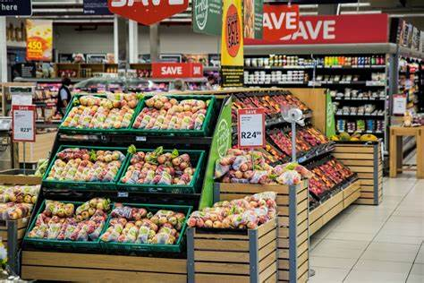
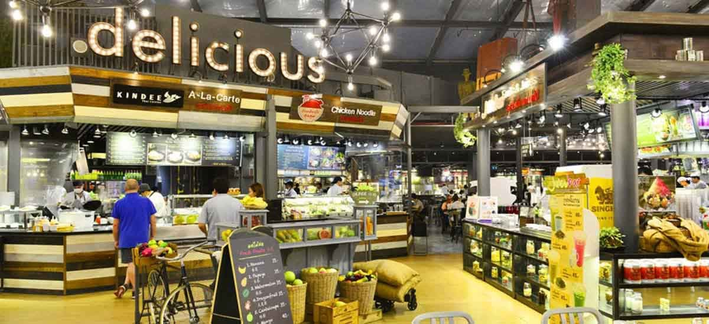
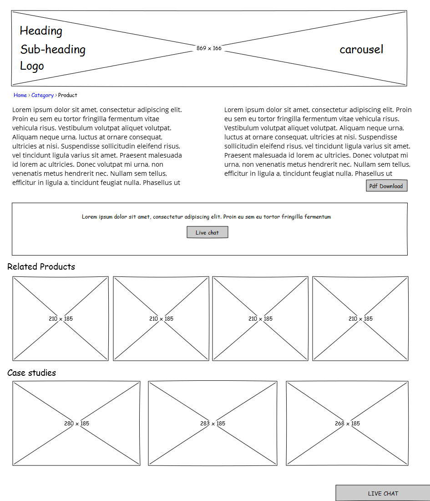

Purpose
Our shopping mall website is more than just an online representation of our physical space; it's a comprehensive tool designed to create a vibrant, connected, and convenient shopping ecosystem. It aims to meet the evolving needs of modern consumers and retailers, providing a dynamic platform that supports business growth and customer satisfaction..
Join UsAudience
My Audience would be people of all ages, all work class persons and also both the internet users and non-internet users. We will bring the best, enticing fast, reliable and safe delivery services and best and quality products to all of our audience thereby making enjoy the best services from us.
Color Palette
Palette URL:
https://coolors.co/palette/003049-d62828-f77f00-fcbf49-eae2b7| Primary | Secondary | Accent 1 | Accent 2 |
|---|---|---|---|
| 003049 | f77f00 | fcbf49 | eae2b7 |
Typography
Heading Font: Noto Sans
Paragraph Font: Titillium Web
Normal paragraph example
We render the best services ever with 2x award of the best global recognize enterprise. We deliver with immediate effect and render the best services and product required. With Over twenty offices worldwide and almost 300 employers, we remind your number one best shopping mall.
Colored paragraph example
come and enjoy the best 100% services.
Navigation
Site Map
Wireframes
Home
For the Home page
PURPOSE
Our Shopping mall will play a vital role to individuals and the society at large. We will always provide only the best and quality services and products to every customers'. We will bring the best internet service and create 24/7 customer care and support services with a well respected and good communicator as a support-aid. We will solve the problem of delayed delivery and irregular support aid. We will always meet up every demands from our customers and also try to meet to every income level of our customers. We will make a balanced mix of anchor tenants, brand-name stores, local businesses, and a variety of retail categories (clothing, electronics, home goods, etc.) in order to cater to a wide range of our audience shopping needs. Our website will serve as an interaction tool between us and our audience, It will also serve as our support center and a center of transcations. Every items needed by oud audience can be brought here and delivered effortlessly to our audience.
 Frequent Questions and Answers
Shopping malls play a significant role in modern society, offering a variety of functions and benefits that extend beyond simply being a location to purchase goods. Here are several key points that highlight the importance of shopping malls to society: 1. Economic Contribution: - shopping malls create numerous job opportunities, from retail and security to maintenance and management positions. - They contribute to the local and national economy through the generation of taxes from sales and property ownership. 2. Social Hub: - Malls serve as social gathering spots where people can meet, socialize, and participate in communal events. - They often feature entertainment options such as movie theaters, arcades, and food courts, which make them a destination for families and friends to spend time together. 3. Convenience: - shopping malls offer a one-stop-shop experience, allowing consumers to purchase a wide range of products and services under one roof. - They provide an environment where people can run multiple errands efficiently, from banking and grocery shopping to clothing purchases and dining out. 4. Urban Development and Regeneration: - The construction of a shopping mall can stimulate the development of surrounding areas, leading to improved infrastructure, such as roads and public transportation. - Malls can be a part of urban regeneration projects, revitalizing areas that are economically depressed or underutilized. 5. Cultural Exchange: - Malls often house a variety of cultural products and services, such as bookstores, art galleries, and cultural performances, which promote cultural awareness and diversity. 6. Climate-Controlled Environment: - They provide a comfortable and protected environment from extreme weather conditions, making shopping and socializing possible year-round. 7. Tourism: - Large and famous shopping malls can become tourist attractions, drawing visitors from other cities and countries, further supporting the local economy. 8. Real Estate Value: - The presence of a shopping mall can increase the value of nearby real estate due to the accessibility of amenities they provide. Shopping malls remain a significant aspect of modern urban life, reflecting the consumer culture of a society.

[Page 2]
Wireframes
Create three wireframes for your site. One for each page and list them here
Home
